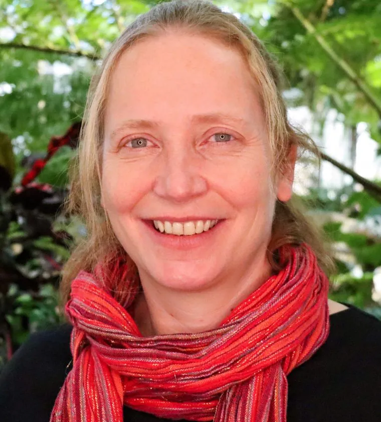
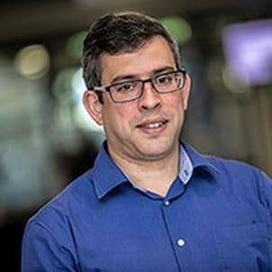
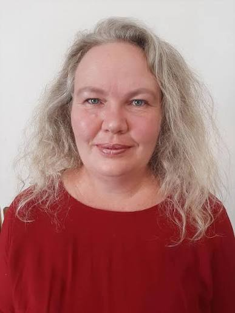

Nélida Barajas Acosta
Mexico · Sonoran Desert · Gulf of California
Conservation Leadership · Desert & Marine Ecology · Environmental Education · Community Conservation
A growing international community advancing the understanding and conservation of springs worldwide.
Select a profile to learn more about each member, their region, and their areas of expertise.
Mexico · Sonoran Desert · Gulf of California
Conservation Leadership · Desert & Marine Ecology · Environmental Education · Community Conservation

Global
IUCN Red List · Freshwater Biodiversity · Species Conservation · Climate Change Vulnerability

Mexico · Mesoamerica · Global
Freshwater Ecosystems · Endangered Fish Conservation · Conservation Biology · Protected Areas

Global
Freshwater Conservation Communications · Public Engagement · Biodiversity Awareness

Global
Freshwater Fish Conservation · Systematic Ichthyology · Freshwater Biodiversity

North America · Global
Springs Ecology · Big Data Analysis

Southeast Asia · North America · Global
Freshwater Fish Conservation · Community-Based Conservation · Conservation Partnerships

North America · Latin America · Guiana Shield · Global
Key Biodiversity Areas · Herpetology · Biodiversity Assessment · Conservation Prioritization

North America
Springs Ecology · Entomology

Africa · Global
Aquatic Ecology · Landscape Ecology · Ecological Restoration · Biological Monitoring

North America
Spring Fishes · Ichthyology

Africa · Global
Geoinformation Science · Freshwater Ecosystems · Biodiversity Monitoring · Ecological Condition
Region: North America · Global
Expertise: Springs Ecology · Big Data Analysis
Email: joseph@springstewardship.org
Dr. Joseph Holway first worked with the Springs Stewardship Institute from 2015–2018 as a field technician before starting graduate school. He earned his PhD in Environmental Life Sciences from Arizona State University in 2024 and was a 2021 Fulbright Research Scholar in Cambodia. His dissertation research focused on hydrologic variance and food security in the Lower Mekong Basin. Born and raised in the Southwest, he developed an appreciation and curiosity for water, particularly in arid environments, and now works to advance the scientific understanding and stewardship of springs ecosystems globally. He will serve as Co-Chair of the IUCN Global Springs Task Force alongside Dr. Heidi van Deventer.
Region: Southeast Asia · North America · Global
Expertise: Freshwater Fish Conservation · Community-Based Conservation · Conservation Partnerships
Email: cou@rewild.org
Dr. Chouly Ou serves as the Freshwater Fish Program Manager at Re:wild. In partnership with SHOAL, she advances freshwater fish conservation by working with communities, scientists, governments, corporations, and nonprofit organizations. Her experience spans freshwater ecology and community-based conservation in Cambodia’s Tonle Sap Lake and the Lower Mekong River Basin, as well as conservation grants, capacity building, teaching, and research.
Region: North America · Latin America · Guiana Shield · Global
Expertise: Key Biodiversity Areas · Herpetology · Biodiversity Assessment · Conservation Prioritization
Email: asnyder@rewild.org
Dr. Andrew Snyder serves as Re:wild’s Key Biodiversity Area Officer, supporting training, identification, reassessment, communication, and fundraising across the KBA Partnership. His research background centers on amphibians, reptiles, species diversity, and endemism, with extensive field experience in Guyana and Central America. He also uses photography and science communication to build stronger connections between people and biodiversity.
Region: North America
Expertise: Springs Ecology · Entomology
Email: larry@springstewardship.org
Dr. Larry Stevens is the Curator of Ecology at the Museum of Northern Arizona and Founding Director of the Springs Stewardship Institute. He received his Ph.D. in Zoology from Northern Arizona University in 1989 and served as ecologist for Grand Canyon National Park from 1989 to 1994. His research has focused extensively on biogeography, springs ecology, and the ecology of the Colorado Plateau.
Region: North America
Expertise: Spring Fishes · Ichthyology
Email: tobler@umsl.edu
Dr. Michi Tobler is a Professor of Biology at the University of Missouri–St. Louis and a Senior Scientist at the Saint Louis Zoo’s WildCare Institute. His research examines biological diversification and adaptation to extreme environments, including fishes inhabiting caves, hydrogen sulfide-rich springs, desert wetlands, and other groundwater-dependent ecosystems. His lab integrates genomic, ecological, and evolutionary approaches with applied conservation.
Region: Global
Expertise: Freshwater Fish Conservation · Systematic Ichthyology · Freshwater Biodiversity
Email: harrisonffsg@gmail.com
Dr. Ian Harrison obtained his Ph.D. in systematic ichthyology at the University of Bristol, UK. He has conducted research on marine and freshwater fishes from several parts of the world, including fieldwork in Europe, Central and South America, West and Western Central Africa, the Philippines, and the Central Pacific. He was based at the American Museum of Natural History from 1996 to 2008, conducting research on systematic ichthyology and freshwater conservation biology, before working with Conservation International (CI) until 2024. He has served as the Technical Officer for the Freshwater Fish Specialist Group of IUCN’s Species Survival Commission (SSC) and is co-Chair of the IUCN SSC Freshwater Conservation Committee. He is also co-Chair of the SSC/WCPA Task Force on Dams, a member of the Mohamed bin Zayed Species Conservation Fund’s Grant Advisory Board, and a member of the Science Committee of the National Geographic Society and Chubb Charitable Foundation Blue Boundaries Program. He is an Adjunct Professor for the School of Earth and Sustainability at Northern Arizona University. He is currently based in Flagstaff, Arizona.
Region: Mexico · Mesoamerica · Global
Expertise: Freshwater Ecosystems · Endangered Fish Conservation · Conservation Biology · Protected Areas
Email: topis@uaem.mx
Dr. Topiltzin “Topis” Contreras-MacBeath has been a professor of ichthyology and conservation biology at the Autonomous University of the State of Morelos in central Mexico for 40 years, where he leads the Conservation Biology work group and has helped train generations of biologists. His research focuses on freshwater ecosystems and the conservation of endangered fishes. Among his most notable achievements is the conservation of the Morelos minnow, Notropis boucardi, a species that was critically endangered and is now protected and valued by local communities.
He served for 23 years as President of the advisory committee of the Corredor Biológico Chichinautzin Natural Protected Area, working with researchers, local authorities, and stakeholders on sustainable management strategies. He is a founder and Regional Coordinator for Mesoamerica of the IUCN SSC Freshwater Fish Specialist Group, a founder and Co-Chair of the IUCN SSC Freshwater Conservation Committee, and a member of the IUCN Species Survival Commission Steering Committee. He previously served as Minister of Sustainable Development for the Government of the State of Morelos. An accomplished photographer, he also helped establish the Alianza Mexicana de Fotografía para la Conservación in 2020 to advance conservation through photography.
Region: Global
Expertise: Freshwater Conservation Communications · Public Engagement · Biodiversity Awareness
Email: m.edmondstone@shoal.org
Michael Edmondstone is the Communications and Engagement Lead at SHOAL, where he works to raise awareness of the freshwater biodiversity crisis and the conservation efforts underway to address it, while inspiring people about the extraordinary diversity of life in the planet’s freshwaters.
Michael has worked across a range of communications roles, including as a journalist in Tanzania and as a marketing manager at a media agency. After spending much of a decade in the corporate sector, he joined an environmental NGO as a communications officer, where he felt he could make a more positive contribution to the challenges facing the natural world. He joined SHOAL in 2020 and enjoys the challenge of drawing attention to freshwater species that have historically been overlooked.
Region: Africa · Global
Expertise: Geoinformation Science · Freshwater Ecosystems · Biodiversity Monitoring · Ecological Condition
Email: HvDeventer@csir.co.za
Dr. Heidi van Deventer is a principal researcher at the Council for Scientific and Industrial Research (CSIR) in South Africa. As a geoinformation scientist, her work focuses on improving the representativeness and monitoring of estuarine and freshwater ecosystem biodiversity and ecological condition.
She is a regional coordinator of the Freshwater Biodiversity Observation Network (FWBON) and an Extraordinary Research Associate in the University of Pretoria’s Department of Geography, Geoinformatics and Meteorology. She will serve as Co-Chair of the IUCN Global Springs Task Force alongside Dr. Joseph Holway.
Region: Africa · Global
Expertise: Aquatic Ecology · Landscape Ecology · Ecological Restoration · Biological Monitoring
Email: J.Simaika@cgiar.org
John Simaika has expertise in aquatic and landscape ecology and restoration, with more than a decade of experience working in African rivers, lakes, wetlands, and artificial ponds. His work spans freshwater biodiversity, ecological assessment, biological monitoring, and restoration.
He is founder and Co-Chair of the IUCN Task Force on Global Freshwater Macroinvertebrate Sampling Protocols (GLOSAM), and founder and Co-Chair of the Biodiversity and Biological Monitoring and Assessment workstream of the World Water Quality Alliance (WWQA-UNEP). He has authored more than 50 peer-reviewed publications in international journals and three books.
Region: Global
Expertise: IUCN Red List · Freshwater Biodiversity · Species Conservation · Climate Change Vulnerability
Email: mbohm@indyzoo.com
With more than a decade of experience supporting freshwater IUCN assessments, Dr. Monika “Monni” Böhm brings extensive knowledge of the diverse conservation issues affecting aquatic species. Her research has addressed topics including climate change vulnerability and extinction threat, and she is a certified IUCN Red List trainer who has contributed to workshops around the world.
She has served as both a postdoctoral research assistant and research fellow at the Zoological Society of London and is a member of numerous IUCN Species Survival Commission Specialist Groups.
Region: Mexico · Sonoran Desert · Gulf of California
Expertise: Conservation Leadership · Desert & Marine Ecology · Environmental Education · Community Conservation
Email: nelida@cedo.org
Nélida Barajas Acosta is internationally recognized for her work in desert and marine biology and for her leadership in conservation. As Executive Director of CEDO Intercultural, the Intercultural Center for the Study of Deserts and Oceans, she leads a team dedicated to environmental conservation and education in the Puerto Peñasco region of Mexico.
Founded in the early 1980s, CEDO Intercultural works to promote awareness and understanding of the ecosystems of the Upper Gulf of California and the Sonoran Desert through research, education, and conservation. The organization collaborates with local communities, businesses, and government institutions to advance sustainable practices and environmental awareness. Nélida also serves on the Board of Directors of the International Sonoran Desert Alliance.